<!DOCTYPE html>
<html  lang="ar"></html>

<head>


  <meta name="viewport" content="width=device-width, initial-scale=1">
  <link href="https://unpkg.com/aos@2.3.1/dist/aos.css" rel="stylesheet">
  <link rel="stylesheet" href="style2.css" type="text/css" />
</head>

<body>
  <header>
    <div id="myNav" class="overlay">
     <a href="javascript:void(0)" class="closebtn" onclick="closeNav()">&times;</a> 
     <!-- <div class="dropdown"> -->
      <!-- <button onclick="myFunction()" class="dropbtn"></button> -->
      <!-- <div id="myDropdown" class="dropdown-content"> -->
        <a href="index.html"id="A">التهجين</a>
        <a href="index4.html"id="B">قوى التجاذب بين الجزيئات</a>
        <a href="https://www.facebook.com/chemistryjo/" id="C">للتواصل مع الاستاذ اسامة</a>
      </div>
      <!-- <form id="form" >
        <fieldset>
          <legend></legend>
          <label for="choose topic">اختر موضوعاً</label>
          <select name="choosetopic" id="chooseTopic"> --> 
            <!-- <option></option> -->
            <!-- <option value="mystery" id="mystery">التهجين</option> -->
            <!-- <option value="true_story" id="true_story">True stories</option> -->
            <!-- <option value='sience' id="sience">قوى التجاذب بين الجزيئات</option> -->
            <!-- <option value="ideas" id="ideas">Ideas</option> -->
          <!-- </select> -->
          <!-- <label for="">Your Age</label>
          <select name="Target age" id="targetAge">
            <option></option>
            <option value="6-12">6-12</option>
            <option value='13-18'>13-18</option>
            <option value='19 or More'>19 or More</option>
          </select>
          <label for="">Choose Date of writing</label>
          <select name="choose date of writing" id="chooseDate">
            <option></option>
            <option value="1990-2000">1990-2000</option>
            <option value="2001-2010">2001-2010</option>
            <option value="2011-until now">2011-until now</option>
          </select> -->
        <!-- </fieldset>
        <button type="submit" id="listen">Go</button>

      </form> -->

    </div>


    <div class="header">
      <div class="sides">
        <a href="#" id="Shope" class="logo">الرئيسية</a>
      </div>
      <div class="sides"> <a onclick="openNav()" href="#" class="menu"> </a></div>
      <div class="info">
        <h1><a>اهلا بكم في موقعنا عن الكيمياء</a></h1>
        <h1>مدرسة العيص الثانوية للبنين ، اعداد الطالب اشرف المحاسنة</h1>
      </div>
    </div>

  </header>
  <main>
    <br>
    <br>
    <section class="content">
      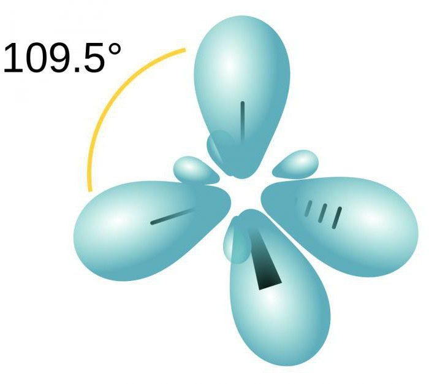
      <p id="tit" data-aos="zoom-in-right">التهجين</p>
      <p data-aos="fade-left">التهجين في علم الكيمياء هو عملية خلط أو اندماج أو اتحاد بين مدارين أو أكثر للإلكترونات في نفس الذرة مختلفين. ويكونان متقاربين في الطاقة لتنتج مدارات مهجنة جديدة متكافئة في الطول والطاقة. ويحدث التهجين في نفس الذرة الواحدة وينتج مدارات متكافئة في الشكل والطول والطاقة. ويجب أن تكون الذرة مثارة.وأن تكون المدارات متقاربة في الطاقة مثل 2S مع 2P أو 4s مع 3d. وتكون عدد المدارات المهجنة مساوية لعدد المدارات النقية الداخلة في التهجين.وتكون المدارات المهجنة أكثر بروزاً إلى الخارج لتكون قدرتها على التداخل أقوى من قدرة المدارات العادية.</p>
      <p data-aos="fade-up-right">التهجين في علم الكيمياء هو عملية خلط أو اندماج أو اتحاد بين مدارين أو أكثر للإلكترونات في نفس الذرة مختلفين. ويكونان متقاربين في الطاقة لتنتج مدارات مهجنة جديدة متكافئة في الطول والطاقة. ويحدث التهجين في نفس الذرة الواحدة وينتج مدارات متكافئة في الشكل والطول والطاقة. ويجب أن تكون الذرة مثارة.وأن تكون المدارات متقاربة في الطاقة مثل 2S مع 2P أو 4s مع 3d. وتكون عدد المدارات المهجنة مساوية لعدد المدارات النقية الداخلة في التهجين.وتكون المدارات المهجنة أكثر بروزاً إلى الخارج لتكون قدرتها على التداخل أقوى من قدرة المدارات العادية.</p>
      <p data-aos="fade-left"> يصف الفلك الجزيئي حيزاً من الفراغ تتحرك فيه الإلكترونات ويشمل نواتين أو أكثر ويتسع لإلكترونين مزدوجين كحد أقصى وتكون طاقة الإلكترون في فلك جزيئي رابط أقل منها في الفلك الذري المستقل.

        تتم عملية التهجين بعد إثارة الذرة  - نتيجة لامتصاص طاقة-  حيث ينتقل إلكترون من فلك فرعي أقل في الطاقة إلى فلك فرعي أعلى في الطاقة</p>
      <br>
      
    </section>
    <div class="image-container" class="parallax">
      <div class="text">التهجين</div>
    </div>
    <section class="content">
      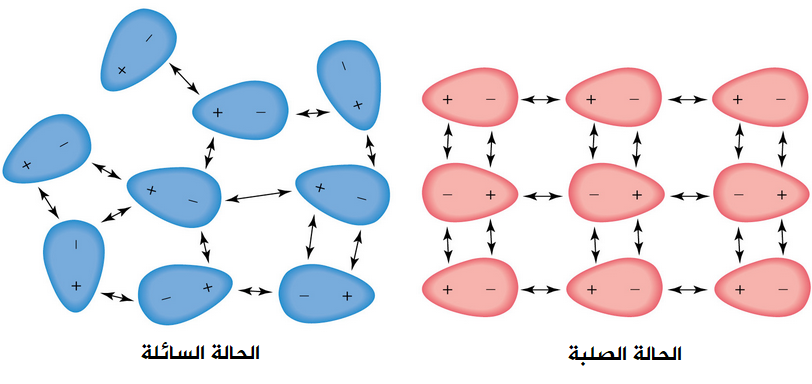
      <p id="tit" data-aos="zoom-in-right">قوى التجاذب بين الجزيئات</p>
      <p data-aos="fade-left">من المعروف أن المادة تتألف بأشكال ثلاث ، هي العناصر والمركبات و المخاليط ، والجسيمات وهي الجزيئات والذرات أو الأيونات ، حيث ترتبط الجسيمات بعضها بعض من خلال قوى متفاوتة القوة ، فنجد أن هذه القوة كبيرة في الحالة الصلبة وتكون متوسطة في الحالة السائلة ، وضعيفة في الحالة الغازية ، ويمكن الربط بين هذه القوى التي تربط جسيمات المادة بقوى الترابط بين الجزيئات ” Intermolecular Forces ” ، ولذلك يمكننا أن نميز بين الروابط الكيميائية Chemical Bonds، والترابط بين الجزيئات . </p>
      <p data-aos="fade-up-right"> فالروابط الكيميائية غالبًا ما تتكون من روابط قوية ، داخل الجزيء ، أما الترابط بين الجزيئات هو ترابط ضعيف يحدث خارج الجزئ  نفسه ، ومن منطلق هذا المفهوم ، يكون لدينا فقط رابطة كيميائية حقيقة واحدة ، وهي هذه الرابطة التساهمية ، فهي الرابطة التي ليس لها أي وجود مادي ، ويتمثل ذلك في المجالات الجزيئية التي تحتوي على الزوج الالكتروني ، وتتكون جميع الروابط الأخرى من روابط بين الجزيئات</p>
      <p data-aos="fade-left">فيوجد ثلاث أنواع من أنواع قوى التجاذب والروابط بين الجزيئات ; هم قوى التشتت المعروفة بقوى لندن ، وقوى التجاذب ثنائية القطبية ، وقوى الترابط الهيروجيني </p>

    </section>

    <section class="content">
      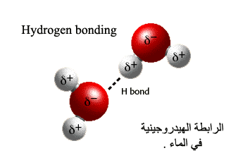
      <p id="tit" data-aos="zoom-in-right">انواع قوى التجاذب</p>
      <p data-aos="fade-left">أولًا قوى لندن ، المعروفة بقوى فان دير:
        فجزيئات الهليوم والهيدروجين وثاني أكسيد الكربون وبعض الغازات الأخرى ، غير قطبية ، فقوى التجاذب بين الجزيئات موجودة ، بالرغم من حالة الضعف ، ولكنها يمكن قياسها ، وأول من فسر ذلك هو عالم الفيزياء الدنماركي فان دير ، وأعطى عالم الفيزياء الإنجليزي Fritz London، التفسير النظري لها عام 1928م ، لذلك سميت بقوى فان لندن.
        
        و هي عبارة عن تجاذب ضعيف ، بين الجزيئات غير القطبية ، كنتيجة لحركة الإلكترونات على السطح ، فتصبح قطبية ، مما يجعل الجزيء القطبي يؤثر على الجزيء المجاور له ، فينتج بالتأثير شحنة ولكنها مخالفة لشحنته ، و لذلك يتولد بين الجزيئات قوى تجاذب ضعيفة لحظية ، لا تدوم طويلًا ، وسرعان ما تختفي ، وتتولد عندما يحدث تغير في توزيع الشحنات الكهربائية بين بعض الجزيئات ، وتبلغ قيمة المواد الصلبة 1\20 إلى 1\10 ، من قيمة الرابطة الأيونية ، وتكون ضعيفة في السوائل ، و من الممكن أن تتواجد هذه القوى بين جزيئات الغازات النبيلة ، وفي الهالوجينات ، ويحدث ارتفاع درجة الغليان بزيادة الكتلة الجزئية</p>
      <p data-aos="fade-up-right">  ثانيًا قوى التجاذب بين الجزيئات ثنائية القطب:
        و هي عبارة عن تجاذب بين الجزيئات القطبية ، بسبب تجاذب الأقطاب المتعاكسة بالشحنة ، فتنشأ قوى ثنائية القطب بين الجزيئات، فمثلا عند اقتراب الجزيئات ثنائية القطب HCL بعضها من بعض فتظهر التأثيرات المتبادلة بينهما ، وينتج ذلك بسبب مواجهة القطب الموجب للجزيئات للقطب السالب ، لجزيئات أخرى ، فيؤدي لظهور قوى التجاذب الكهربائية بين الأقطاب المتشابه ، وبالطبع تكون تلك القوة ، أضعف من قوى التجاذب الكهربائي في الرابطة الأيونية ، وبالرغم من حالة الضعف ولكن يؤدي ذلك لتماسك الجزيئات القطبية معا ، فيؤدي إلى ارتفاع درجة الغليان
      </p>
      <p data-aos="fade-left">ثالثًا الرابطة الهيدروجينية:
        وهي التي تنشأ في كل من الماء السائل والثلج ، بسبب قوى التجاذب الكهربائي بين ذرة الهيدروجين في جزيء ، وذرة الأوكسجين في جزيء أخر ، وفيكون لذرة الهيدروجين القدرة على التمركز ، بين الذرات ” الاوكسجين ” ، والتي تربط بإحداهما عن طريق رابطة تساهمية قطبية وأخرى رابطة هيدروجينية.
        
        وتتواجد هذه الرابطة داخل المركبات التي تحتوي على جزيئتها ، على ذرة هيدروجين ، مرتبطة برابط تساهمي مع ذرة أخرى ، تكون ذات سالبية كهربائية عالية مثل ; الكلور والفلور والنيتروجين والأوكسجين، ومن أمثلة هذه المركبات ; مركبات الأمونيا(NH3) ومركبات فلوريدالهيدروجين (HF) والماء H2O، و تكتسب تلك المركبات خصائص فريدة وبالرغم من كونها ضعيفة ، إلا أنها تتسبب بعدة تغيرات بالخواص الفيزيائية للمركبات</p>

    </section>
    <section class="content">

      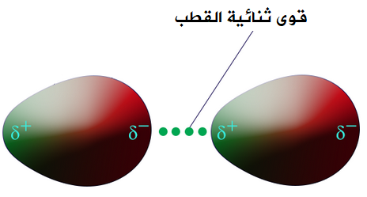


      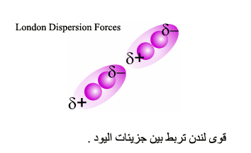


      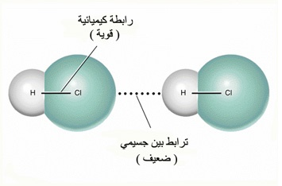

      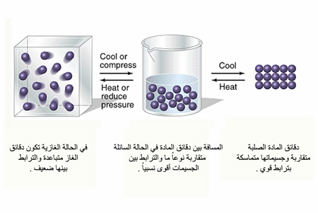

    </section>


    <div class="image-container1">
      <div class="text">قوى التجاذب بين الجزيئات</div>
    </div>
    <br>
    <section class="content">
      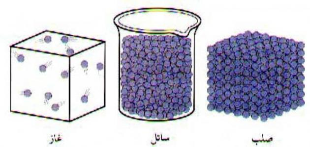
      <p id="tit" data-aos="zoom-in-right">حالات المادة الثلاث</p>
      <p data-aos="fade-up">حالة المادة هي الصفة الفيزيائية والكيمائية للمادة والتي تشير إلى شكل الروابط بين جزيئاتها، أو الذرات أو الأيونات.

        الحالة الصلبة (الجامدة): المواد الصّلبة لها شكل ثابت حيث أن الجزيئات لا تنتقل من مكانها؛ تكون الجزيئات متقاربة بقدر كبير في الحالة الجامدة، الكثافة في المواد الصلبة عالية، لأن الفراغات صغيرة جدًّا بين الجزيئات
        الحالة السائلة: تأخذ السّوائل شكل الوعاء الذي توضع فيه، والجزيئات في السوائل ليست ثابّتة. السّوائل عالية الكثافة إلى حدّ ما، وليس هناك مساحات كبيرة بين الجزيئات.
        الحالة الغازية: ليس للغازات شكل محدد لكن الغازات تملأ أيّ فراغ متاح لأن الجزيئات تتحرّك بسرعة في كلّ الاتّجاهات، يمكن ضغط الغازات بسهولة، ولجزيئات الغازات مساحات كبيرة فيما بينها، لذلك فإنه من السهل أن تتقارب جزيئات الغاز. كثافة الغازات منخفضة جدًّا، وهناك مساحات فارغة كبيرة بين الجزيئات
        حالة البلازما (هيولي): هي حالة متميزة من حالات المادة يمكن وصفها بأنها غاز متأين تكون فيه الإلكترونات حرة وغير مرتبطة بالذرة أو بالجزيء. فإذا كانت المادة توجد في الطبيعة في ثلاث حالات: صلبة وسائلة وغازية، فإنه بالإمكان تصنيف البلازما على أنها الحالة الرابعة التي يمكن أن توجد عليها المادة</p>

      <p data-aos="fade-left">الحالة الصلبة
        تتجمع الجُزيئات المكوِّنة لهذه الحالة من المادة بالقرب من بعضها، وتترابط بشكلٍ قويّ للغاية، حتّى أنّك لا تستطيع تحريك إحدى هذه الجزيئات بمعزلٍ عن الجُزيئات الأخرى، بالأضافة إلى امتلاكها طاقةً حركيّةً قليلةً جدًا، ولكن من الجدير بالذكر أنّ ذرات هذه الجزيئات تهتز باستمرارٍ في موضعها الذي تتواجد فيه. والحالة الصلبة للمادة لها شكل ثابت وحجم محدد، ولا تأخذ شكل الإناء الموضوعة فيه. ونتيجةً لقوّة ترابط جُزيئاتها، لن تستطيع التأثير على حجمها بالضغط</p>

      <p data-aos="fade-down"> 
        الحالة السائلة
        تتميز جُزيئات هذه الحالة من المادة بارتفاع الطاقة الحركية عن مثيلتها في الحالة الصلبة، ولا تُشكِّل هذه الجزيئات شكلًا محددًا للمادة، ولكنّها تترابط مع بعضها بشكلٍ ضعيف، ما يسمح لها بأن تأخذ شكل الإناء المحويّة فيه. ولكنّها تمتلك حجمًا ثابتًا ومحددًا، بالإضافة إلى عدم إمكانيّة ضغطها، أيّ مثل الحالة الصلبة. عند التأثير بقوّةٍ على سطح المادة السائلة، فإنّ هذه القوى تتوزع بالتساوي على السطح ما يسمح لأيّ جسم بأزاحة أيّ قدر من السائل والحلول محلّه.
        
        وفي أبريل 2016 أعلن العلماء عن حالةٍ غريبةٍ من المادة في حالتها السائلة، ففي هذه الحالة يُمكن حمل السائل باليد وكأنه مادةٌ صلبة . عند فحص هذه المادة بالميكروسكوبات ظهرت الإلكترونات في حالة ارتباطٍ عشوائيّ، وكأنّها مادة في حالتها السائلة. سُمِّيَت هذه المادة الجديدة بسائل كيتيف الكموميّ المغزليّ، يعود هذا لدخول إلكترونات هذه المادة في حالةٍ من الرقص العشوائيّ، مُخالفةً بذلك الوضع المٌتعارف عليه حينها، حيث أنّ تبريد السوائل ينظّم الإلكترونات، لتبدأ الحالة الصلبة للمادة بالتشكّل، ولكنّ إلكترونات هذه المادة تتجه للعشوائيّة بغض النظر عن درجة حرارة الوسط المحيط المنخفضة.
        
        الحالة الغازية
        هناك مسافات بينيّة شاسعة بين جُزيئات الغاز، ما يسمح بازدياد طاقتها الحركيّة، وإن لم تُحصَر هذه الجُزيئات في إناء أو أيّ وسط مُحدد، سوف تنتشر بشكلٍ عشوائيّ في الفضاء. عند حصر جُزيئات الغاز في حاوية، تنتشر هذه الجُزيئات لتشغل كلّ أجزاء الحاوية أو الإناء المحوية فيه. وعند ازدياد الضغط عليها ترتفع درجة حرارتها وطاقتها الحركيّة. بالإضافة إلى ذلك، في حال ظلّ حجم الإناء ثابتًا وازادت درجة حرارة الجُزيئات، ستزداد حينها طاقتها الحركيّة، ويزداد ضغطها على جُدارن الإناء
      </p>
    </section>
    <section class="content">
      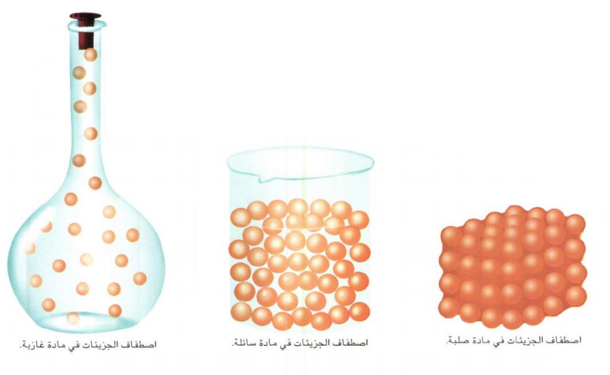

      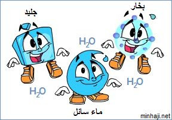


      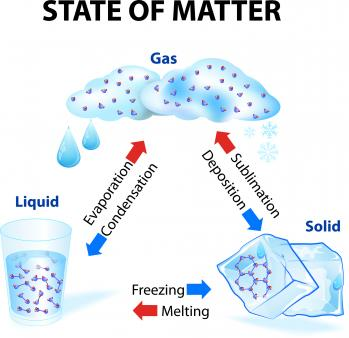

      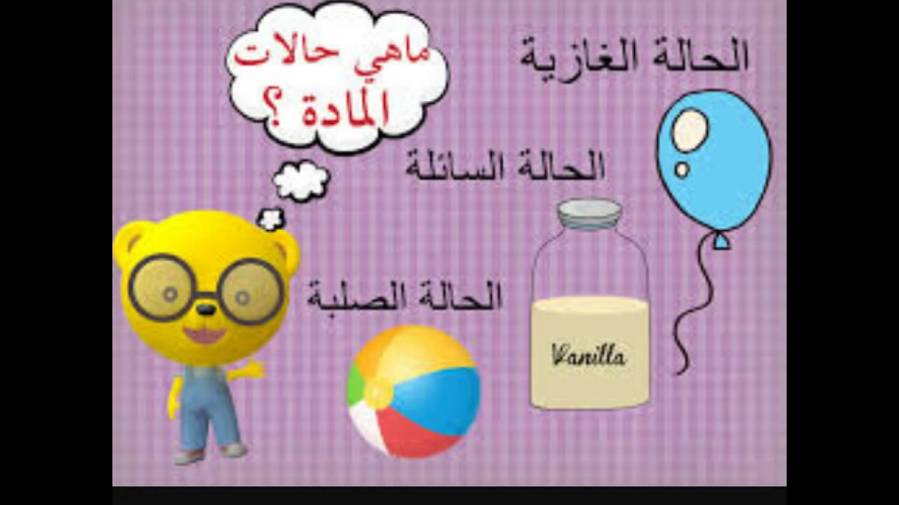

    </section>
    <section class="content">
      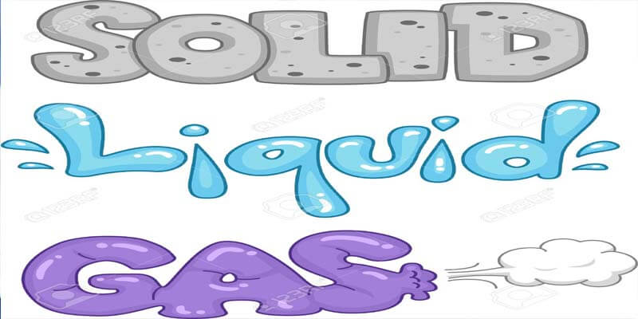
      <p id="tit" data-aos="zoom-in-right">نظرية الحركة الجزيئية للغازات</p>
      <p data-aos="fade-up">تنص نظرية الحركة الجزيئية على النقاط التالية </p>
<br>
      <p data-aos="fade-left">أ – تتكون جميع الغازات من دقائق صغيرة جدا تكون في حركة عشوائية مستمرة بحيث تتصادم مع بعضها البعض و بجدران الوعاء الذي توضع فيه و هذا يسبب ضغط الغاز
       <br> ب – معظم حجم الغاز فراغ</p>

      <p data-aos="fade-down"> ج – جميع تصادمات الدقائق فيما بينها و مع جدران الوعاء مرنة و لكن يبقى مجموع الطاقة الحركية للجزيئات ثابتا
       <br> د – يتناسب متوسط الطاقة الحركية لجزيئات الغاز تناسبا طرديا مع درجة حرارته المطلقة</p>
    </section>
    <section class="content">

      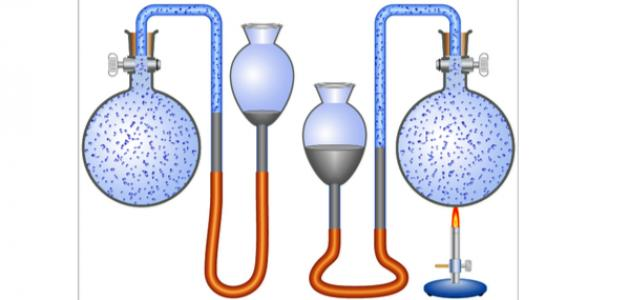


      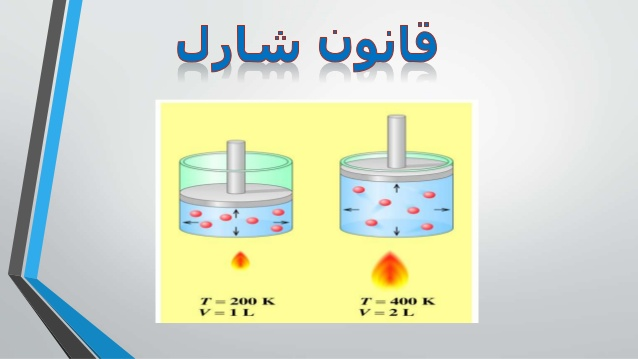


      <!-- 

       -->

    </section>
    <div class="image-container2">
      <div class="text">حالات المادة</div>
    </div>
    <br>
  </main>
  <footer>
    <div class="footer">
      <br>
      <br><br>
      <br>


      <div class="contain">
        <div class="col">
          <h1>We</h1>
          <!-- <ul>
            <li>About</li>
            <li>Mission</li>
            <li>Services</li>
            <li>Social</li>
            <li>Get in touch</li>
          </ul> -->
        </div>
        <div class="col">
          <h1>Love</h1>
          <!-- <ul>
            <li>About</li>
            <li>Mission</li>
            <li>Services</li>
            <li>Social</li>
            <li>Get in touch</li>
          </ul> -->
        </div>
        <div class="col">
          <h1>Chemistry</h1>
          <!-- <ul>
            <li>About</li>
            <li>Mission</li>
            <li>Services</li>
            <li>Social</li>
            <li>Get in touch</li>
          </ul> -->
        </div>
        <div class="col">
          <h1>So</h1>
          <!-- <ul>
            <li>Webmail</li>
            <li>Redeem code</li>
            <li>WHOIS lookup</li>
            <li>Site map</li>
            <li>Web templates</li>
            <li>Email templates</li>
          </ul> -->
        </div>
        <div class="col">
          <h1>Much</h1>
          <!-- <ul>
            <li>Contact us</li>
            <li>Web chat</li>
            <li>Open ticket</li>
          </ul> -->
        </div>
        <div class="col social">
          <h1>Social</h1>
          <ul>
            <li><a href="https://www.facebook.com/chemistryjo/"></a></li>
            <!-- <li><a href="https://twitter.com/twitterbooks"></a></li>
            <li><a href="https://www.instagram.com/explore/tags/book/"></a></li> -->
          </ul>
        </div>
        <div class="clearfix"></div>
        <div style="padding-left:20px">
          <p>Copyright &copy; 2019 Made By Ashraf Mahasneh ( ABF3A) &copy;</p>
        </div>
        <br>
      </div>
    </div>
  </footer>
  <script src="https://unpkg.com/aos@2.3.1/dist/aos.js"></script>
  <script>
    AOS.init();
  </script>
  <script src="apps.js"></script>
</body>

</html>